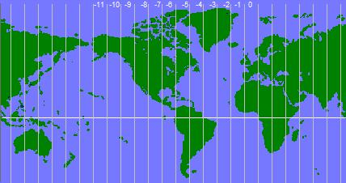

Principales líneas y puntos de la tierrra
En
El eje terrestre. El eje terrestre es la línea recta, o eje
imaginario, alrededor del cual
Ecuador terrestre y paralelos. El Ecuador es el círculo
máximo, perpendicular al eje terrestre. Divide a
Situar al Ecuador es importante porque es el punto de referencia para determinar la latitud de un lugar.

Los paralelos. Son
círculos menores, paralelos al Ecuador y entre sí. Son de diferentes tamaño,
disminuyendo del Ecuador hacia los polos, debido a la redondez de
Los paralelos más importantes que separan las zonas térmicas
son:
Hemisferio
norte:
- Trópico de
Cáncer 23°2'7' lat. norte
- Círculo
polar ártico 66°33' lat. norte
Hemisferio sur:
- Trópico de Capricornio 23°27' lat. sur
- Círculo polar antártico
66°33' lat. sur
Meridianos. Son semicírculos que van del polo norte al polo
sur. El círculo completo se forma con el antimeridiano, que es el meridiano
opuesto.
Por un convenio internacional, a partir de 1816 se determinó
que el meridiano que pasa por el Observatorio de Greenwich, en Londres, fuera
el meridiano 0°. Junto con su antimeridiano, o sea el meridiano 180°, que pasa
por el Océano Pacífico, divide a

>> regresar